Sequences
A sequence is a set of numbers which follow a particular rule. The word 'term' is often used to describe the numbers in the sequence.
For instance
3, 7, 11, 15, 19, 23, ...
The first term is 3 and the second term is 7 etc.
The expression 'the nth term' is often used to describe the value of any term in the sequence.
For the above sequence the nth term is 4n - 1 so that:
the first term(where n = 1) is 4 × 1 - 1 = 3
the second term(where n = 2) is 4 × 2 - 1 = 7
Similarly:
the 50th term(where n = 50) is 4 × 50 - 1 = 199
Arithmetic Sequences
Arithmetic Sequences (or linear sequences) are sequences where the terms increase or decrease by the same value each time.
As the first differences are all the same then the sequence is linear, so you can use the formula:
the nth term = first terms + (n - 1) × 1st difference
nth term = n1 + (n - 1) ×
For this sequence:
the nth term = 3 + (n - 1) × 4
= 3 + (n - 1) × 4 = 3 + 4n - 4 = 4n - 1
NB: When we consistently add or minus, it is an arithmetic sequence.
Geometric Sequence
Geometric Sequences (or geometric progressions) are sequences where consecutive terms are found by multiplying or dividing by the same value each time.
the nth term = first term × common ration-1
nth term = n1 × 3n-1
For this sequence:
the nth term = 1 × 3n-1
NB: When we consistently multiply or divide, it is a geometric progression.
Quadratic Sequences
The nth term of the quadratic sequence has the form an2 + bn + c where a, b and c are constants and a is generally not 0. if a is 0 then the sequence is an arithmetic sequence.
For the sequence
-1, 2, 7, 14, 23, 34, ...
work out the differences as shown.

As the first differences are not the same, work out the second differences (or the differences of the differences).
For this sequence:
As the second differences are all the same, the sequence is quadratic so use the formula:
the nth term = an2 + bn + c
As you can see, this is 2 sequences in 1 sequence. And there are 6 steps to finding nth term for quadratic sequences.
Step 1: Find the 1st difference
Step 2: Find the 2nd difference
Step 3: Divide the 2nd difference by 2 and attach n2 to it
2 ÷ 2 = 1
= 1n2
Step 4: Find the values of 1n2 from step 3
1 × 12, 1 × 22, 1 × 32, 1 × 42, 1 × 52, 1 × 62
= 1, 4, 9, 16, 25, 36
Step 5: Original Sequence take away new sequence from step 4 to get another new sequence
-1, 2, 7, 14, 23, 34
1, 4, 9, 16, 25, 36
-2, -2, -2, -2, -2, -2
Step 6:All new differences give two, so we just combine out answer to step 3 with -2 from step 5 above
= 1n2 - 2
= n2 - 2
Sometimes there can be more to step 6 if the differences form yet another new sequence. Check Quadratic Sequences Practice questions for more variations.OR
the nth term = first term + (n - 1) × 1st difference + (n - 1)(n - 2) × (2nd Difference ÷ 2)
= -1 + (n - 1) × 3 + (n - 1)(n - 2) × (2 ÷ 2)
= -1 + 3n - 3 + n2 - 2n - n + 2 × 1
= -1 -3 + 2 + 3n - 2n - n + n2
= -4 + 2 + 3n - 3n + n2
= -2 + n2
= n2 -2
Cubic Sequences
Cubic Sequences are sequences where the third differences between terms are constant. The nth term formula has the form an3 + bn2 + cn + d.
For the sequence:
4, 14, 40, 88, 164, ...
Work out the differences until they become constant.
As the first and second differences are not the same, work out the third differences. If the third differences are constant, the sequence is cubic.
For this sequence:
the nth term = an3 + bn2 + cn + d
Step 1: Find the 1st, 2nd, and 3rd differences.
Step 2: Divide the 3rd difference by 6 to find a and attach n3.
6 ÷ 6 = 1
= 1n3
Step 3: Calculate the values of 1n3 for n = 1, 2, 3, 4.
= 1, 8, 27, 64
Step 4: Original Sequence take away new sequence from step 3 to get another new sequence.
4, 14, 40, 88
1, 8, 27, 64
3, 6, 13, 24
Step 5: Find the nth term of this new sequence (3, 6, 13, 24). This is a quadratic calculation:
Step 5a: Find the differences of this sequence.
1st diff: 3, 7, 11 | 2nd diff: 4, 4
Step 5b: Divide 2nd difference by 2 for the n2 term.
4 ÷ 2 = 2 → 2n2
Step 5c: Subtract 2n2 values (2, 8, 18, 32) from the Step 5 sequence.
3, 6, 13, 24
2, 8, 18, 32
Linear sequence: 1, -2, -5, -8
Step 5d: Find the linear nth term for (1, -2, -5, -8).
Difference is -3. Use: 1 + (n - 1) × -3
= 1 - 3n + 3 = -3n + 4
Step 5 Result: Combine these to get 2n2 - 3n + 4
Step 6: Combine Step 2 (n3) with the result from Step 5.
= 1n3 + 2n2 - 3n + 4
= n3 + 2n2 - 3n + 4
OR
the nth term = an3 + bn2 + cn + d
Solve these four equations using the sequence's first differences:
1) 6a = 3rd Difference
2) 12a + 2b = 1st of the 2nd differences
3) 7a + 3b + c = 1st of the 1st differences
4) a + b + c + d = 1st term of the sequence
For our sequence (4, 14, 40, 88...):
Step 1: 6a = 6 → a = 1
Step 2: 12(1) + 2b = 16 → 2b = 4 → b = 2
Step 3: 7(1) + 3(2) + c = 10 → 13 + c = 10 → c = -3
Step 4: 1 + 2 + (-3) + d = 4 → 0 + d = 4 → d = 4
Combine the values:
= n3 + 2n2 - 3n + 4
NB: If you consistently find a 3rd difference, the sequence is cubic.
Special Sequences
The following are Special Sequences of numbers that you should be able to recognize instantly.
Square Numbers
The first few terms of a square number sequence are as follows:
1, 4, 9, 16, 25, ...
These are the result of multiplying an integer by itself (n × n).
For the first 5 terms, this multiplication looks like:
- 1 × 1 = 1
- 2 × 2 = 4
- 3 × 3 = 9
- 4 × 4 = 16
- 5 × 5 = 25
nth term = n2
Cube Numbers
The first few terms of a cube number sequence are as follows:
1, 8, 27, 64, 125, ...
These are the result of multiplying an integer by itself three times (n × n × n).
For the first 5 terms, this multiplication looks like:
- 1 × 1 × 1 = 1
- 2 × 2 × 2 = 8
- 3 × 3 × 3 = 27
- 4 × 4 × 4 = 64
- 5 × 5 × 5 = 125

nth term = n3
Triangle Numbers
The first few terms of a triangle number sequence are as follows:
1, 3, 6, 10, 15, ...
These numbers can be arranged in an equilateral triangle. Each term is the sum of the consecutive integers up to n.
For the first 5 terms, this addition looks like:
- 1 = 1
- 1 + 2 = 3
- 1 + 2 + 3 = 6
- 1 + 2 + 3 + 4 = 10
- 1 + 2 + 3 + 4 + 5 = 15
nth term = n(n + 1) / 2
Derivation: We can visualize the formula by taking two identical triangles and putting them together to form a rectangle.

The rectangle has a width of n + 1 and a height of n. Since the triangle is exactly half of that rectangle, the nth triangle number is half of n(n + 1).
Prime Numbers
The first few terms of a prime number sequence are as follows:
2, 3, 5, 7, 11, 13, 17, ...
Numbers that have exactly two factors: 1 and themselves. Note that 1 is NOT a prime number and 2 is the only even prime.
Fibonacci Sequence
The first few terms of a fibonacci sequence are as follows:
1, 1, 2, 3, 5, 8, 13, 21, ...
In this sequence, each term is found by adding the two previous terms.
The nth term is defined by the formula: xn = xn-1 + xn-2
To find the elements of the sequence step-by-step:
- Term 1 (x1): Given as 1
- Term 2 (x2): Given as 1
- Term 3 (x3): x2 + x1 = 1 + 1 = 2
- Term 4 (x4): x3 + x2 = 2 + 1 = 3
- Term 5 (x5): x4 + x3 = 3 + 2 = 5
NB: If the terms are growing but not by a consistent multiplication or addition, check if the sum of the previous two terms works!